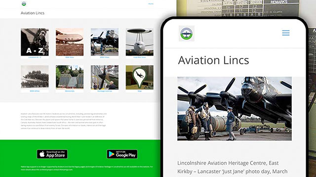
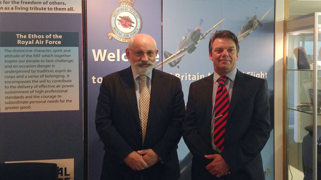
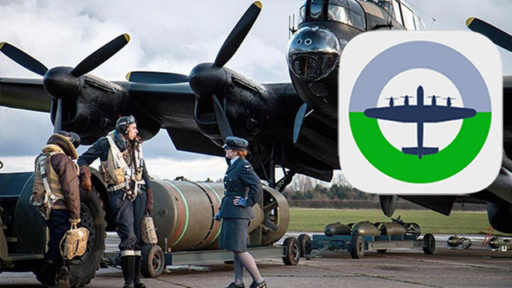
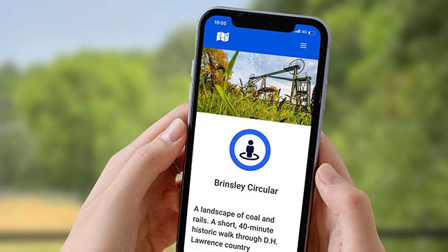
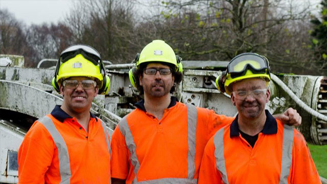
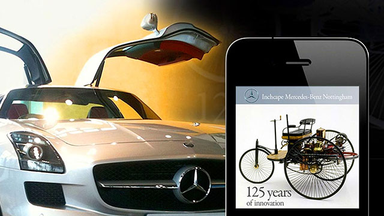

Heritage
Trails, Talks, Web, Exhibitions
Although I skipped the family tradition of working down the pit, at the age of seventeen I was granted honorary membership of the National Union of Mineworkers (NUM) and later a Coal Industry and Social Welfare Organisation (CISWO) scholarship, in recognition of a mural I painted for the Notts Branch Headquarters. The painting featured in A.R. Griffin's book The Nottinghamshire Coalfield 1881-1981. The canvas served as a backdrop to TV news bulletins during the 1984-85 Miners' Strike - a silent witness to political turmoil.








Digital Ambassadors
Since 2011, I have collaborated with mining historian, Dr David Amos. David worked as a coal miner until pit closures forced him to switch career. Returning to education as an adult student, David recognised that digital media could help capture and tell the story of the industry, its culture and communities.
David and I met at a Digital Ambassadors Network event, where I was presenting a mobile trail I had created for Newark Aviation Museum. Our first research collaboration was A History of Coal Mining in 10 Objects, led by Dr Sarah Babcock at the University of Nottingham and supported by the Arts and Humanities Research Council (AHRC). The project explored iconic objects associated with the mining industry using the web, video, print, and events - a multichannel approach subsequently adopted for most of our projects. We also worked with student filmmakers to capture underground footage at Caphouse Colliery, Wakefield, and the historic setting of the D.H. Lawrence Birthplace Museum, Eastwood. Our film Snap Tin was subsequently screened at the Broadway Cinema, Nottingham.
Whilst archiving material in the former NUM headquarters, our team uncovered a cache of twelve mining union banners which were featured in the BBC TV series, Civilisations Stories: The Art of Mining (2018) and later in a print publication Banners and Beyond (2020).
Augmenting website content with print, film, audio and events, helps maximise accessibility and community engagement.
Further collaborations at Bestwood Colliery Winding House, and the D.H. Lawrence Centre, Eastwood, led to the formation of a Community Interest Company, Mine2Minds Education (M2Me). Since 2015, we have facilitated outreach projects with leading universities and heritage organisations in the East Midlands and Yorkshire.
Heritage Trails
Early experiments in mobile heritage trails began in 2010 with a prototype for the Sillitoe Trail, commemorating Nottingham novelist Alan Sillitoe. A commission to mark 125 years of the internal combustion engine followed for Mercedes-Benz (2011). And in 2013 a suite of location-aware apps for Android and iPhone were produced for Aviation Heritage Lincolnshire. - Projects which informed the design of a dedicated platform built for scale and reuse.
The MyTrail platform supports the creation and delivery of trails and tour guides. The design uses interactive maps, a simple navigation interface and supports audio and video. It can be used on mobile, tablets and desktop computers for heritage, arts and humanities and tourism projects. MyTrail projects can be augmented with print, exhibition panels, and QR codes to trigger the playback of media clips at any point in a trail.

Heritage Projects
- CoalTown Days - East Midlands mining culture print (2026).
- Friends of Pleasley Pit 30th Anniversary publication (2026).
- Robin Hood's Blidworth and Blidworth Colliery village, mobile Trails (2025).
- Pleasley Pit Mining Museum Tour Guide, mobile trail and print (2024).
- Mine-craft the Prequel, workshops and print (2024).
- Brinsley Circular, D.H. Lawrence themed coal and rail mobile trail (2022).
- Kirkby Heritage Centre, web design and mobile trail (2021).
- Banners and Beyond, education booklet for schools (2020).
- Mine-craft the Prequel: The Photographic Story of East Midlands Coal, print (2019).
- Coal, Community and Change, exhibition, website and interpretation app (2019).
- Cultural Trail Design Workshop, Nottingham Trent University (2019).
- Mine-craft the Prequel, Coal Authority, picture archive pilot project (2018).
- BBC TV, Civilisations Stories: The Art of Mining (2018).
- Songs and Rhymes from the Mines, book and audio CD (2016).
- Requiem for Coal, Commemorative walk, D.H. Lawrence Festival (2015).
- D.H. Lawrence Society, Jesse Chambers video and print (2015).
- Bestwood Colliery Winding Engine House, education ebook for schools (2014).
- BBC Radio 4, Saturday Live, D.H Lawrence, mining heritage segment (2013).
- Official Mining Heritage website for coal mining culture in the East Midlands (2013).
- A History of Coal Mining in 10 Objects, web, print, video, events (2013).